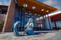
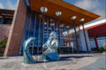

Fotografias | Vídeo | Poema
Almada, Terra e Mar
Nas margens do Tejo, em silêncio a brilhar,
Ergue-se Almada, cidade a sonhar,
Com o vento nas ruas, as histórias no ar,
Guarda segredos que o tempo não vai apagar.
Nas encostas íngremes, casario a subir,
Há vozes antigas, há um novo porvir,
Olhos no Cristo, que abraça o luar,
E o cais que te chama, te convida a ficar.
Almada, tão perto, e ao mesmo tempo além,
Onde o rio te envolve como quem quer bem,
As praias douradas de areia e mar,
São braços abertos, prontos a abraçar.
As gentes, as cores, o céu de safira,
Na alma de quem passa, um canto respira,
Da Caparica ao Ginjal, és sempre a razão,
De um coração que pulsa em cada canção.
Almada, cidade de amor e de calma,
Tua essência é o que alimenta a alma,
Entre o rio e o oceano, tu sabes voar,
És poema e vida, és lugar de ficar.